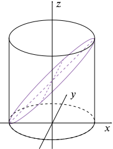

A uniform solid right circular cylinder of radius a and height 2a stands on a horizontal plane. Rectangular co-ordinate axes Ox, Oy are taken in the plane of the base, with O at the centre of the base. The cylinder is cut into two equal parts by the plane which passes through the line x=−a and makes an angle of 45∘ with the horizontal. Justify the formula
∫a−a2(x+a)a2−x2⎯⎯⎯⎯⎯⎯⎯⎯⎯⎯⎯⎯√dx
for the volume of the lower half…

Cylinder sliced in two by a plane
Front view of the cylinder
Top view of the cylinder
The volume of the lower half can be thought of as the sum of the volumes of thin vertical slices parallel to the y-axis.
Each slice has a shape approximating a cuboid, with thickness δx.
To find the height of a slice we look at the front view of the cylinder. The slice at distance x from the origin has height z=x+a.
For the width of a slice, we look at the plan view. The base is a circle of radius a and Pythagoras’ theorem tells us that x2+y2=a2. The width of the slice is twice the y value, namely 2a2−x2⎯⎯⎯⎯⎯⎯⎯⎯⎯⎯⎯⎯√.
The volume of each slice, then, is
2a2−x2⎯⎯⎯⎯⎯⎯⎯⎯⎯⎯⎯⎯√(x+a)δx,
and so the total volume of the bottom half (as in the limit, the sum becomes an integral) is
∫a−a2a2−x2⎯⎯⎯⎯⎯⎯⎯⎯⎯⎯⎯⎯√(x+a)dx,
as required.
…and verify by calculation of the integral that the volume is πa3.